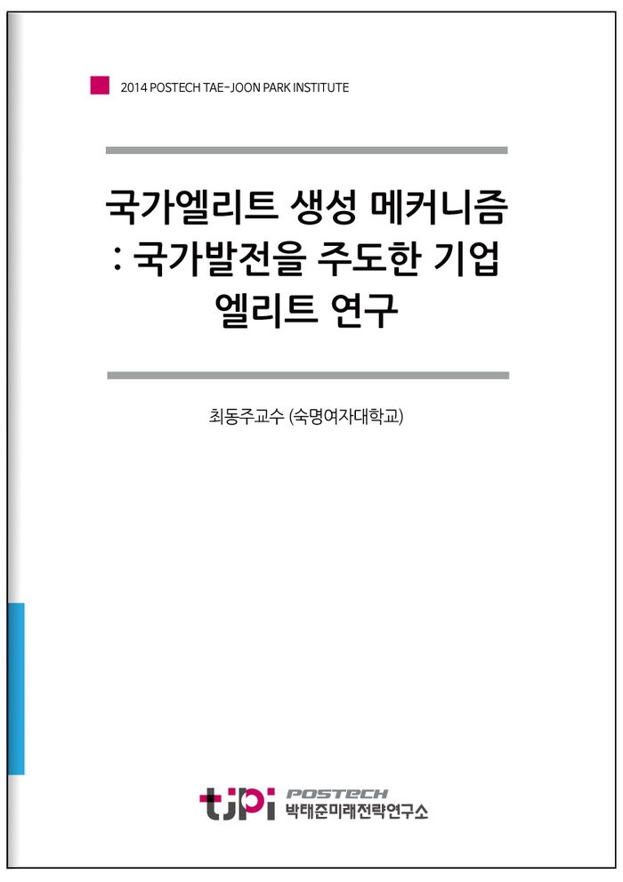

저자 최동주교수 (숙명여자대학교)보도일 2014-12-09
요 약
국가엘리트 생성 메커니즘 : 국가발전을 주도한 기업 엘리트 연구
위대한 기업 리더 연구의 필요성
국가의 번영과 융성을 위한 주력산업을 주도하며, 국가발전의 과정에 결정적 역할을 한 산업 및 자본 계열의 기업 엘리트들의 역할은 그 학술적 연구의 가치가 높음에도 불구하고, 관련 학계에서 큰 주목을 받아오지 못한 것이 사실이다. 국가사회를 향한 그들의 가치형성의 과정은 무엇이며, 어떤 공통요인이 있는지, 그리고 궁극적으로 이 리더들의 특성이 국가의 발전을 위한 공익적 목표에 왜 부합하게 되었는지에 대한 연구는 후발 산업국가들의 발전모델 설정과 이를 주도할 기업 리더들이 지녀야 하는 제반 덕목에 주는 시사점이 크다.
연구대상 기업리더 선정의 기준
본 연구는 국가의 융성과 발전에 이바지 하며, 공익을 추구해온 주요 국가의 세계적인 기업엘리트들을 선정, 적정 리더십 이론에 따라 이들을 유형화하고 함의하는 바를 분석하고자 한다. 먼저 연구대상 기업은 미국・유럽・아시아를 중심으로 선정하였으며, 경제전문지 포춘의 세계에서 가장 존경받는 기업(the most-admired companies)중에서 선정하였다. 그 선정의 기준은 우선 산업의 성격이 국가의 기간전략 산업의 역할을 수행했고, 지속성장을 유지해왔으며, 국내외에서 이른바 ‘존경받는 기업’을 염두에 두었다. 유럽지역에서는 2014 세계에서 가장 존경받는 기업 산업기계 부문 1위를 차지한 스웨덴 Asea & Brawn Bevery(ABB)의 지주회사인 발렌베리(Wallenberg), 아시아 지역에서는 종합 25위를 차지한 일본의 도요타 자동차(Toyota), 51위를 차지한 인도 타타스틸(Tata steel)의 지주회사인 타타그룹(Tata group, 인도)을 선정하였다. 예외적으로 미국지역의 기업선정은 세계에서 가장 존경받는 기업 선정(2014)에 포함되지 않았으나, 본 연구를 위한 미래전략연구소의 지원 취지에 부합함과 동시에 미국산업 융성기를 주도하며, 미국 산업발전의 근간을 제시한 유에스 스틸의 모태인 카네기 스틸을 선정하였다.
짐 콜린스의 '위대한 기업' 관점과 위대한 기업리더의 사회공헌
짐 콜린스의 주요 발견 중 하나는 위대한 기업은 두 가지 문화적 차원에서 성공적이라는 점이다. 목표를 설정할 수 있는 능력과 책임성을 강화 할 수 있는 규율과, 자유와 혁신과 위험 감수의 기업가 정신이 바로 이에 해당한다.
본 연구대상 리더들 역시 장기적으로 위대한 회사로 이끌어 갈 수 있는 후계자들을 양성하였으며, 가문이나 내부에서 후계자를 선택했던 것으로 볼 수 있다. 연구대상 리더 4명 모두는 또한 과학 발전을 위해 투자를 하거나 교육에 대한 지원을 아끼지 않았다는 공통점이 있다. 이는 후계자 양성뿐 아니라 국가발전의 후계자들을 양성하기 위한 노력으로 볼 수 있다.
도요타 사키치는 ‘발명이 국가를 위한 길’로 생각하고 과학에 대한 관심을 놓치지 않았으며, 아들 기치로에게는 ‘나는 자동직기 발명을 통해 나라에 충성했으나 너는 자동차를 통해 애국하라’고 했던 만큼 후계자에게도 국가발전을 위해 노력해야 함을 주장했다. 앤드류 카네기는 미국의 과학발전을 위해 2백만 달러를 기부하여 카네기 공대를 세웠고, 워싱턴 DC에 카네기 과학관 역시 2백만 달러를 기부하여 설립하였다. 발렌베리재단들은 과학과 기술만이 스웨덴의 생존과 역동적인 성장을 가져올 수 있다는 믿음 하에 스웨덴 과학기술연구의 최대 민간 후원자로 활동하고 있다. 크누트 발렌베리는 북유럽 최초의 경제대학인 스톡홀름경제대학의 창립을 주도하였다. 그리고 재단을 만들어 스톡홀름 시 도서관과 스톡홀름상공회의소, 시립 천문대, 해양기술 박물관 등을 세우기도 하였다. 잠셋지 타타는 자신의 재산의 1/2에 해당하는 20만 파운드에 해당하는 땅을 대학원 부지로 기부했다. 뛰어난 과학기술 인력만이 국가와 산업 발전을 가져올 수 있다고 믿었다. 인재의 중요성을 깨닫고 이를 위해 그는 최고의 과학 고등교육기관(대학원)을 설립하고 싶어 했으며, 그의 꿈은 인도과학원(IISc, Indian Institute of Science)으로 실현된다. 잠셋지는 인도과학원 외에도 20여개 초∙중등학교를 세워 인도인 교육에 앞장섰다.
특히 타그룹은 국가발전의 후계자양성을 보다 확장시켜 인도 서민들을 위한 사업을 실시한다. 위험한 자전거나 오토바이를 대체할 10만 루피(한화 약240만원)의 자동차 ‘나노’, 매년 40만 명의 더러운 물로 사망하는 어린이들을 예방하고자 세계 최저가 정수기 ‘스와처’(2만 5000원), 수억 명의 빈곤층에게 내 집 마련의 기회가 될 100만원도 안 되는 초저가 집 ‘나노하우스’가 이러한 결과물들이다. 단순히 현재의 성공만을 바라고 자신을 최고의 경영자라고 여기는 리더에게는 볼 수 없는 결과물이다. 자신의 기업뿐 아니라, 국가 발전의 후계자, 즉 국민을 위한 관심이 이러한 기업 경영을 가져오게 된 것이다.
목 차
Ⅰ. 서론
Ⅱ. 인구통계학적특성에 따른 리더십 사례 연구
Ⅲ. 리더십 분석 및 유형화: Good to Great 매트릭스
Ⅳ. 결론 및 시사점
참고자료
내 용
[2014 연구논문] 국가엘리트 생성 메커니즘 : 국가발전을 주도한 기업 엘리트 연구
최동주교수 (숙명여자대학교)

